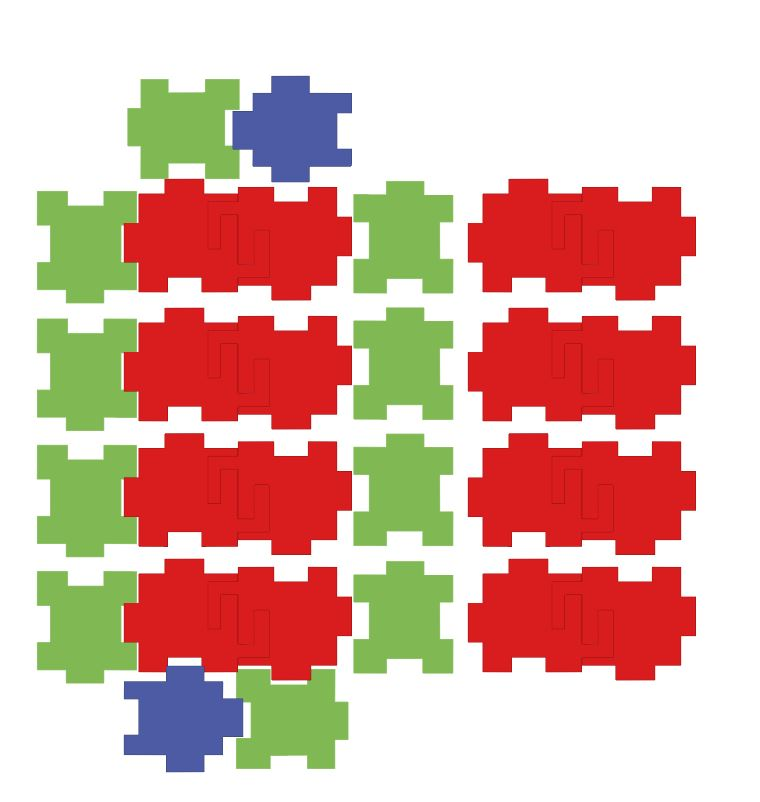

Lukas' Assignment 1!

OVERVIEW: A press fit cardboard puzzle piece

Synthesis / Define
PROCESS OVERVIEWIn order to best to approach the problem I sketched out solutions based around two criteria.
The first being one piece of the kit must be used at least 12 times.
The Secondary objective was personal, I wanted to create an asset that that i could return to later for future exploration, possibly during the Final project.
Ideation / Develop
OVERVIEW: A press fit cardboard puzzle piece In order to best to approach the problem, I sketched out solutions based around the criteria mentioned.
Further iterated ideas in Adobe Illustrator
Test / Implementation / Deliver
Cutting out the pieces and adjusting each of the three pieces for the press fit took a bit of extra time. A tenth of an inch off in each piece would compound creating additional clearance between thus offset the assembly.


This problem was resolved by tons of testing. The issue was resolved by account for the amount of material being removed by the laser and adjusting the files accordingly.
Laser Cuts off about .01 so in order to create a press fit; male ends must be +.01 inches bigger than the female ends as they should be -.01 shorter


In the future, I need to explore setting up anchor point to mirror one another such that making adjustments to the file keeps Press Fit intact. Further exploration could include researching the process to make the pieces more flush and compact with one another.
Peer-attribution Tanya helped me understand how much the the laser was cutting off (.01") which helped me better gauge my tolerances. Source files Include source files and machine settings for your project